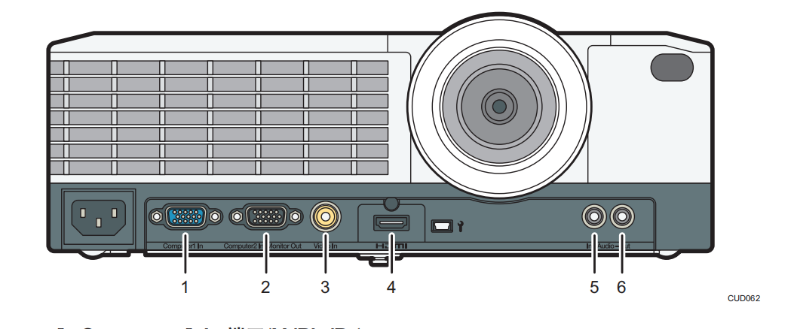

投影仪端口¶
1. Computer1 In 端口(Y/Pb/Pr)¶
用于从计算机中输入 RGB 信号或者从视频播放器中输入分量视频信号(Y/Pb/Pr)。
2. Computer2 In/Monitor Out 端口¶
用于输入 RGB 信号，或将输入到“Computer1 In 端口”中的图像信号输出到外部显示设备。 您可以在[默认设置 1]下的[计算机 2 端子]中切换此端口的用途。
3. Video In 端口¶
用于输入视频播放器的图像信号。
4. HDMI 端口¶
用于从计算机或者视频播放器输入 HDMI 信号。
5. Audio In 端口¶
用于输入计算机或者视频播放器的音频信号。
6. Audio Out 端口¶
用于将音频信号输出到外部扬声器。
